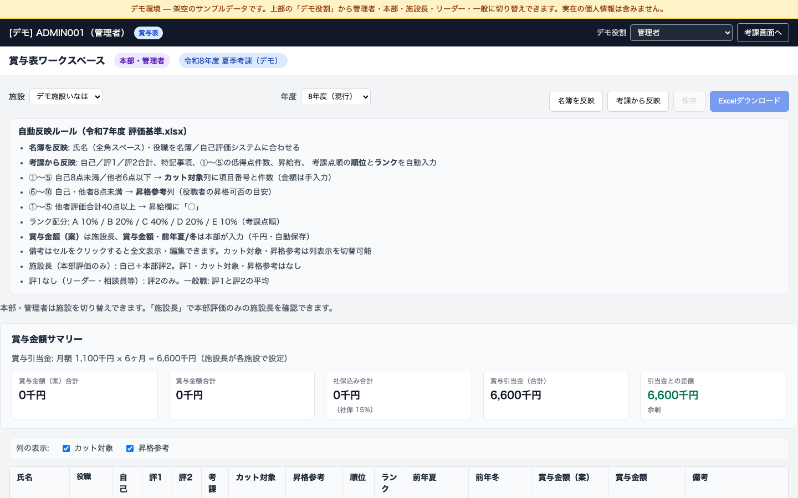
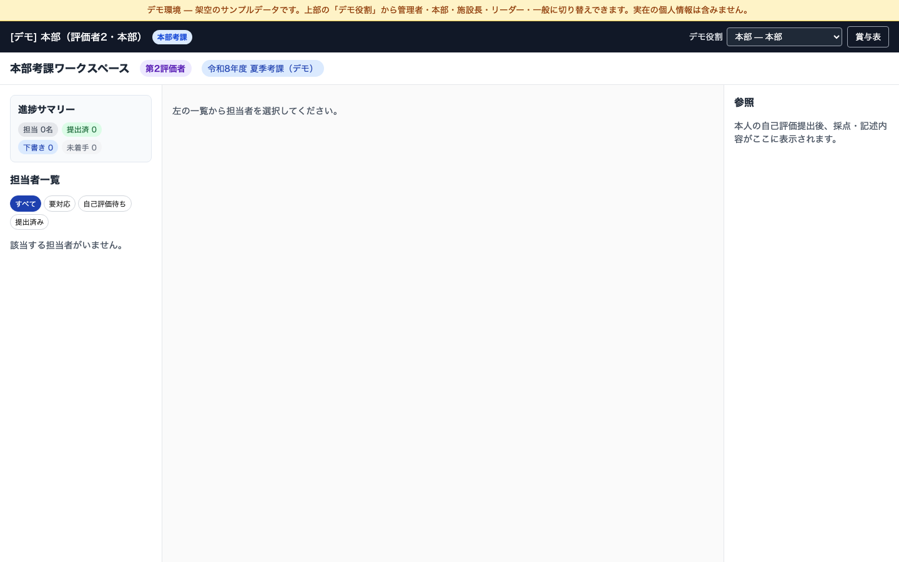
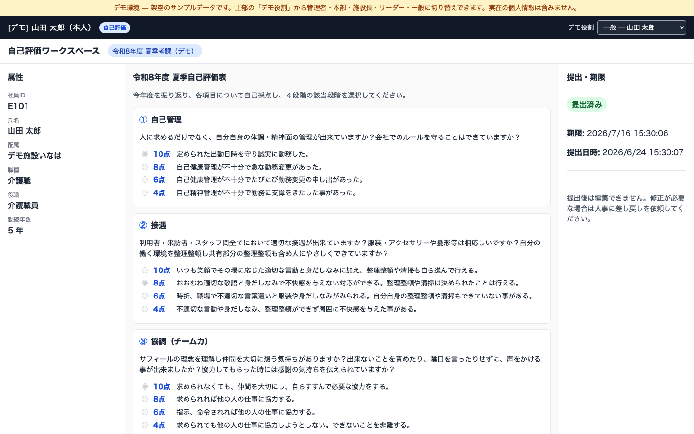
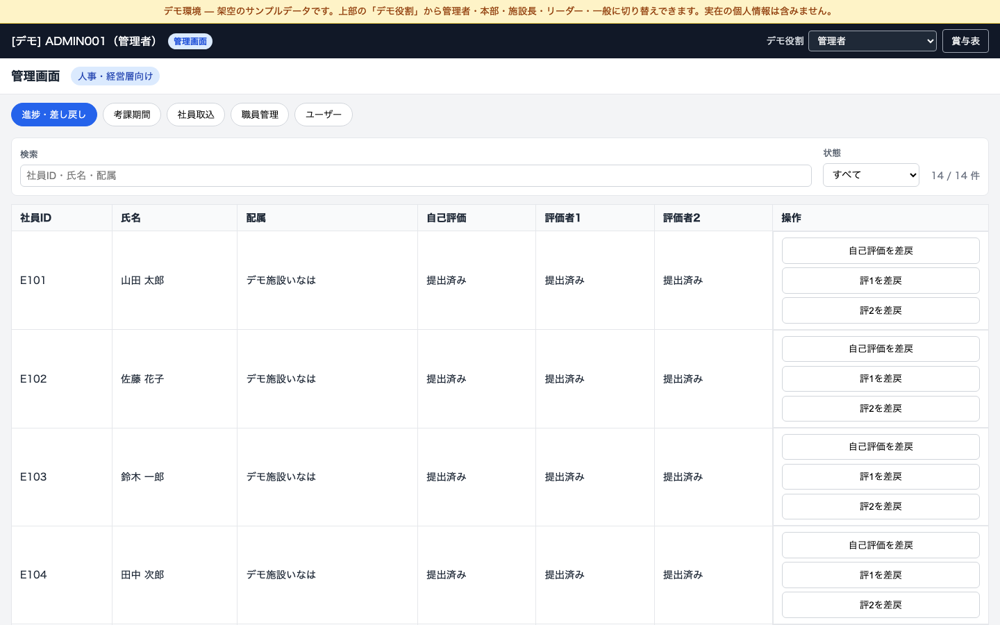

介護施設グループの人事考課（自己評価・評価者考課・本部考課）と賞与表管理を Web 化したツール。
ロール別の権限制御、年度別の賞与データ保存、公開デモ（ログイン不要・役割切替）まで実装した。
① システム全体構成
ブラウザ UI
React + TypeScript
Vercel 公開
▼ HTTPS / REST API ▼
API サーバー
FastAPI + Python
Railway 公開
▼ 読み書き ▼
PostgreSQL
名簿・考課・ユーザー
＋
JSON ファイル
賞与金額・引当金
＋
設定 JSON
施設マスタ
② 主な画面とロール
| ロール | 主な画面 | できること |
|---|
| 一般職員 | 自己評価 | 自己評価表の入力・提出 |
| リーダー | 部下の考課 | 一次評価（評価者1）の入力 |
| 施設長 | 賞与表 / 自己評価 | 賞与案・引当金の入力、考課反映 |
| 本部 | 本部考課 / 賞与表 | 二次評価、確定賞与の入力 |
| 管理者 | 管理画面 / 賞与表 | 期間管理・名簿・ユーザー管理 |
公開デモでは画面上部の「デモ役割」から5役割を切り替え可能（パスワード不要）。
③ 典型的なデータの流れ
① 名簿登録→
② 自己評価提出→
③ 評価者考課→
④ 本部考課→
⑤ 賞与表へ反映→
⑥ 金額確定
考課データ → PostgreSQL（正規データ）
賞与金額・引当金 → JSON（年度別・ロール別編集）
施設設定 → facilities.json（コード変更なしで8施設対応）
④ ツール画面キャプチャ

賞与表（管理者・本部視点） — 全施設の一覧、引当金サマリー、確定賞与の入力
 賞与表（施設長） — 自施設のみ。賞与案・引当金を編集（自動保存）
賞与表（施設長） — 自施設のみ。賞与案・引当金を編集（自動保存）

本部考課 — 二次評価者が部下の考課を確認・入力
 部下の考課（リーダー） — 評価者1として一次考課を実施
部下の考課（リーダー） — 評価者1として一次考課を実施

自己評価（一般職員） — 10項目採点と所感の入力・提出

管理画面 — 考課期間・名簿取込・評価状況の管理
⑤ 保持できるようにしたデータ
| カテゴリ | 保持する内容 | 例 |
|---|
| 名簿 |
社員ID・氏名・所属施設・職種・役職・勤続年数・評価者 |
山田 太郎 / デモ施設いなは / 介護職 |
| 考課 |
自己評価・評価者1/2の採点と所感、提出状態、確定日時 |
10項目採点、哲学・スローガン等のテキスト |
| 賞与表 |
考課点・順位・ランク・備考・前年夏/冬・賞与案/確定・引当金 |
順位3位 / ランクB / 案500千円 / 確定480千円 |
| 期間 |
考課期間名・年度・季節・各締切・使用テンプレート |
令和8年度 夏季考課 |
| ユーザー |
ログインID・ロール・管理者/本部フラグ |
施設長 / 本部 / 管理者 |
| 監査 |
操作ログ（差戻し・退職処理など） |
誰が・いつ・何をしたか |
| 退職 |
退職時の考課データスナップショット（JSON + Excel） |
data/retired_employees/ |
⑥ 保存先と、それを選んだ理由
| 保存先 | パス / 場所 | 選んだ理由 |
|---|
| PostgreSQL |
Railway 上の DB
employees evaluations users 等 |
名簿・考課はシステムの正規データ。複数画面・複数ユーザーで共有し、
リレーション（評価者↔部下）や提出状態を安全に管理するため。
|
| JSON ファイル |
backend/data/bonus_amounts/{施設key}.json |
賞与は考課とライフサイクルが異なる（施設長案→本部確定→引当金突合）。
年度キー付き JSON なら過去参照が容易で、Excel テンプレートと共存できる。
項目ごとの編集権限（案/確定/引当金）も API で細かく制御しやすい。
|
| 施設設定 JSON |
backend/data/facilities.json
（デモは facilities.demo.json） |
8施設の名称・Excel シート名・引当金初期値をコード変更なしで差し替え可能。
デモ公開時は架空施設名に切替え、個人情報を載せない。
|
| Excel テンプレート |
.env の BONUS_WORKBOOK_TEMPLATE_PATH |
現場の既存 Excel 運用との互換。ダウンロード用の体裁維持。
デモ環境では未設定でも、名簿ベースで Web 賞与表を表示できるよう対応。
|
| ブラウザ |
localStorage（列表示設定・JWT） |
UI 設定はサーバー不要。セッション token もクライアント保持でシンプルに実装。
|
3層保存の考え方：
「考課の正データは DB」「賞与の運用データは JSON」「Excel は既存資産の橋渡し」と役割分担。
すべて DB に寄せる案もあったが、賞与表は試作・変更が多く、ファイルベースの方が早く改善を回せた。
⑦ 工夫したポイント
- ロール別 UI — 施設長は「案・引当金」、本部は「確定賞与」と編集範囲を画面で明示
- 金額の自動保存 — 700ms デバウンスで入力消失を防止
- 引当金サマリー — 社保15%込み合計と引当金の差額をリアルタイム表示
- 年度別管理 — 過去年度は閲覧のみ、現行年度だけ編集可能
- Excel なしでも全施設対応 — PostgreSQL 名簿から行を自動生成
- 公開デモ — 架空データ・役割切替・CORS 自動許可で課題提出 URL を安全に公開
- 施設長ビュー — 本部が全施設長を横断して賞与を確認できる特殊画面
⑧ 苦戦したポイント
- Excel と Web の二重管理 — 施設ごとに Excel 有無が異なり、
bonus_workbook.py に条件分岐が集中
- 権限の細分化 — 項目×ロール×年度の組み合わせ（案/確定/引当金/閲覧のみ）の整理
- 単位の統一 — 円と千円が混在。読込時マイグレーションで千円に統一
- UI スクロール — flex レイアウト内で表が伸び、全体スクロール不能になる不具合を CSS で解決
- クラウド公開 — CORS・デモ seed・Excel 未設定時の例外など、ローカルと本番の差分対応
- 年度別 JSON 移行 — 既存フラット構造を壊さず
years 構造へ自動移行
⑨ 技術スタック（参考）
Frontend
React, TypeScript, Vite
Vercel デプロイ
Backend
FastAPI, SQLAlchemy
Railway デプロイ
Data
PostgreSQL, JSON, openpyxl
pytest テスト
詳細レポート：docs/BONUS_WORKBOOK_REPORT.md ／
ツール：https://safir-hyouka.vercel.app ／
図解：https://safir-hyouka.vercel.app/assignment/